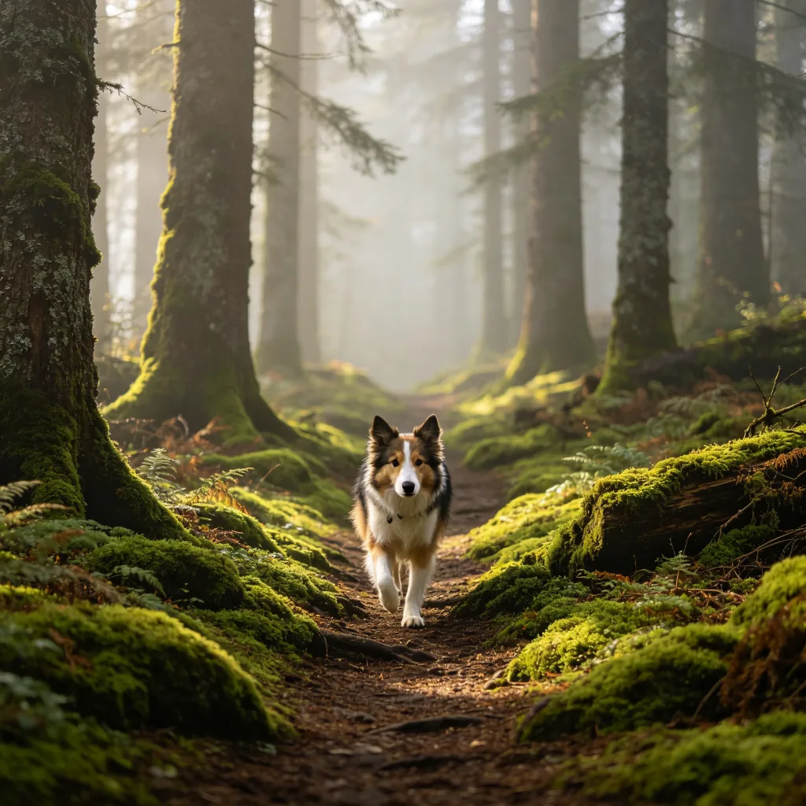

畫面中，一隻毛髮蓬鬆的天竺鼠站在鬱鬱蔥蔥的草莓田裡，周圍是翠綠的葉子和點綴其間的紅色果實。牠的小嘴微微張開，鼻子興奮地抖動著，彷彿在說：「這裡是天堂嗎？」這張照片在網路上獲得了壓倒性的好評，網友們紛紛表示「這是我見過最快樂的天竺鼠」「如果我是天竺鼠，我也會想住在這裡」「原來快樂這麼簡單，就是一片草莓田」。但這張照片背後，其實藏著關於寵物飲食和環境豐容的重要啟示。
天竺鼠：不是豬，也不是來自幾內亞
先來說說天竺鼠這個名字的由來。天竺鼠（guinea pig）既不是豬，也不是來自幾內亞（Guinea）——牠們是原產於南美洲安地斯山脈的齧齒動物，屬於豚鼠科。至於為什麼叫「豬」，可能是因為牠們的叫聲有點像小豬，而且體型圓滾滾的也有幾分相似；而「幾內亞」的由來則眾說紛紜，一說是因為最早把天竺鼠帶到歐洲的船隻經過了幾內亞，另一說是「幾內亞」在當時的英語中泛指任何遙遠的異國之地。
在中文裡，「天竺鼠」這個名字可能源於「天竺」（即印度），因為早期人們以為這種動物來自印度。而「豚鼠」則是更準確的翻譯——「豚」就是小豬的意思，「鼠」指明了牠的齧齒動物屬性。無論叫什麼名字，這種圓滾滾、愛發出吱吱叫聲的小動物，已經陪伴人類超過三千年了。

天竺鼠的飲食：維生素C的秘密
天竺鼠的飲食需求非常特殊，其中最重要的一點是：牠們和人類一樣，無法自行合成維生素C，必須從食物中攝取。這在哺乳動物中是相當罕見的——大多數哺乳動物（包括狗和貓）都能在肝臟中自行合成維生素C，但天竺鼠、人類、靈長類動物和某些蝙蝠卻失去了這個能力。
這意味著，如果天竺鼠的飲食中缺乏維生素C，牠們就會患上壞血病——和大航海時代的水手們一樣。壞血病的症狀包括牙齦出血、關節腫脹、毛髮粗糙、食慾不振，嚴重時甚至會導致死亡。因此，為天竺鼠提供充足的維生素C是飼養中最關鍵的一環。

哪些食物富含維生素C呢？新鮮的蔬菜和水果是最佳來源：
- 甜椒：維生素C含量之王，每100克含有超過100毫克的維生素C，是橙子的兩倍以上。紅甜椒和黃甜椒都很受天竺鼠歡迎。
- 青花菜：不僅富含維生素C，還含有豐富的纖維和礦物質。可以生吃或稍微蒸煮後餵食。
- 草莓：維生素C含量豐富，而且甜度適中，是天竺鼠的最愛之一。但由於糖分較高，應適量餵食。
- 奇異果：維生素C含量極高，但酸度也較高，有些天竺鼠可能不喜歡。
- 番茄：富含維生素C和番茄紅素，但要注意只能餵成熟的果實，綠色的莖和葉含有對天竺鼠有毒的龍葵鹼。
需要注意的是，維生素C很容易被光和熱破壞，因此新鮮的蔬果應該儘快餵食，不要存放太久。此外，雖然天竺鼠專用飼料中通常添加了維生素C，但這些添加劑在儲存過程中會逐漸流失，因此不能完全依賴飼料，新鮮蔬果仍然是必不可少的。
草莓田的啟示：環境豐容的藝術
那張草莓田中天竺鼠的照片，之所以讓這麼多人感動，不僅僅是因為畫面可愛，更是因為它展示了一種理想的寵物生活狀態——在一個豐富、自然、充滿探索樂趣的環境中，動物可以表達出最真實的快樂。這就是環境豐容的核心意義。
對於天竺鼠來說，一個好的生活環境應該包括：
- 寬敞的空間：天竺鼠是群居動物，需要足夠的空間來活動和互動。建議每隻天竺鼠至少有0.7平方公尺的地面空間，而且越大越好。
- 柔軟的墊料：天竺鼠的腳底很嬌嫩，需要柔軟、無塵的墊料（如紙棉、羊毛氈）來保護腳底健康。避免使用松木或雪松木屑，因為其中的芳香油可能對天竺鼠的呼吸系統造成刺激。
- 多個躲藏處：天竺鼠是被捕食者，天生膽小，需要多個安全的躲藏處來獲得安全感。可以用陶瓷窩、紙板箱、椰殼或布帳篷來製作躲藏處。
- 覓食的樂趣：把牧草和蔬菜散佈在籠子的各個角落，或藏在益智玩具中，讓天竺鼠花時間尋找。這不僅能打發時間，還能模擬野外的覓食行為。
- 安全的戶外時間：在天氣適宜的時候，可以讓天竺鼠在圍欄保護的草地上活動一段時間。新鮮的空氣、陽光和草地對天竺鼠的身心健康都有好處。但一定要確保沒有捕食者（如老鷹、貓）的威脅，並且避免在正午的烈日下活動。
草莓餵食注意事項
雖然草莓對天竺鼠來說是安全的，但由於糖分較高，應適量餵食。建議每週2-3次，每次1-2顆小草莓即可。餵食前一定要徹底清洗，去除農藥殘留。草莓的葉子對天竺鼠也是安全的，但同樣要清洗乾淨。
草莓田中的天竺鼠，或許只是一個精心安排的拍攝場景，但它所傳遞的訊息卻是真實的：每一個生命，無論多麼渺小，都值得在一個豐富、溫暖、充滿愛的環境中生活。當我們為寵物打造這樣的環境時，我們不僅是在照顧牠們的身體，更是在尊重牠們的天性和靈魂。而那一隻在草莓田中快樂覓食的天竺鼠，或許就是在告訴我們：幸福，其實可以很簡單。